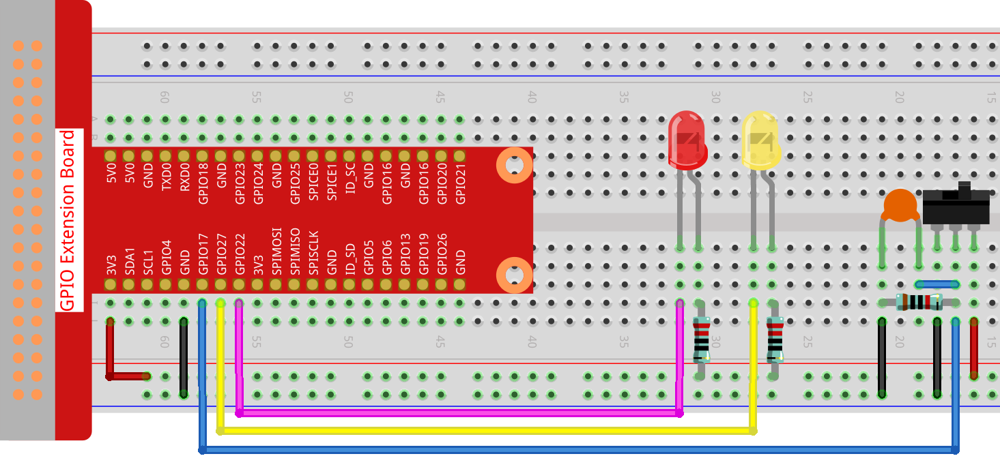

2.1.2 Slide Switch¶
Introduction¶
In this lesson, we will learn how to use a slide switch. Usually,the slide switch is soldered on PCB as a power switch, but here we need to insert it into the breadboard, thus it may not be tightened. And we use it on the breadboard to show its function.
Components¶

Principle¶
Slide Switch

A slide switch, just as its name implies, is to slide the switch bar to connect or break the circuit, and further switch circuits. The common-used types are SPDT, SPTT, DPDT, DPTT etc. The slide switch is commonly used in low-voltage circuit. It has the features of flexibility and stability, and applies in electric instruments and electric toys widely.
How it works: Set the middle pin as the fixed one. When you pull the slide to the left, the two pins on the left are connected; when you pull it to the right, the two pins on the right are connected. Thus, it works as a switch connecting or disconnecting circuits. See the figure below:

The circuit symbol of the slide switch is shown as below. The pin2 in the figure refers to the middle pin.

Capacitor
The capacitor is a component that has the capacity to store energy in the form of electrical charge or to produce a potential difference (Static Voltage) between its plates, much like a small rechargeable battery.
Standard Units of Capacitance
Microfarad (μF) 1μF = 1/1,000,000 = 0.000001 = \(10^{- 6}\) F
Nanofarad (nF) 1nF = 1/1,000,000,000 = 0.000000001 = \(10^{- 9}\)F
Picofarad (pF) 1pF = 1/1,000,000,000,000 = 0.000000000001 = \(10^{- 12}\)F
Note
Here we use 104 capacitor(10 x 104PF). Just like the ring of resistors, the numbers on the capacitors help to read the values once assembled onto the board. The first two digits represent the value and the last digit of the number means the multiplier. Thus 104 represents a power of 10 x 10 to 4 (in pF) equal to 100 nF.
Schematic Diagram¶
Connect the middle pin of the Slide Switch to GPIO17, and two LEDs to pin GPIO22 and GPIO27 respectively. Then when you pull the slide, you can see the two LEDs light up alternately.


Experimental Procedures¶
Step 1: Build the circuit.
For C Language Users¶
Step 2: Go to the folder of the code.
cd /home/pi/davinci-kit-for-raspberry-pi/c/2.1.2
Step 3: Compile.
gcc 2.1.2_Slider.c -lwiringPi
Step 4: Run the executable file above.
sudo ./a.out
While the code is running, get the switch connected to the left, then the yellow LED lights up; to the right, the red light turns on.
Code
#include <wiringPi.h>
#include <stdio.h>
#define slidePin 0
#define led1 3
#define led2 2
int main(void)
{
// When initialize wiring failed, print message to screen
if(wiringPiSetup() == -1){
printf("setup wiringPi failed !");
return 1;
}
pinMode(slidePin, INPUT);
pinMode(led1, OUTPUT);
pinMode(led2, OUTPUT);
while(1){
// slide switch high, led1 on
if(digitalRead(slidePin) == 1){
digitalWrite(led1, LOW);
digitalWrite(led2, HIGH);
printf("LED1 on\n");
}
// slide switch low, led2 on
if(digitalRead(slidePin) == 0){
digitalWrite(led2, LOW);
digitalWrite(led1, HIGH);
printf(".....LED2 on\n");
}
}
return 0;
}
Code Explanation¶
if(digitalRead(slidePin) == 1){
digitalWrite(led1, LOW);
digitalWrite(led2, HIGH);
printf("LED1 on\n");
}
When the slide is pulled to the right, the middle pin and right one are connected; the Raspberry Pi reads a high level at the middle pin, so the LED1 is on and LED2 off
if(digitalRead(slidePin) == 0){
digitalWrite(led2, LOW);
digitalWrite(led1, HIGH);
printf(".....LED2 on\n");
}
When the slide is pulled to the left, the middle pin and left one are connected; the Raspberry Pi reads a low, so the LED2 is on and LED1 off
For Python Language Users¶
Step 2: Get into the folder of the code.
cd /home/pi/davinci-kit-for-raspberry-pi/python
Step 3: Run.
sudo python3 2.1.2_Slider.py
While the code is running, get the switch connected to the left, then the yellow LED lights up; to the right, the red light turns on.
Code
import RPi.GPIO as GPIO
import time
# Set GPIO17 as slide switch pin, GPIO22 as led1 pin, GPIO27 as led2 pin
slidePin = 17
led1Pin = 22
led2Pin = 27
# Define a setup function for some setup
def setup():
# Set the GPIO modes to BCM Numbering
GPIO.setmode(GPIO.BCM)
# Set slidePin input
# Set ledPin output,
# and initial level to High(3.3v)
GPIO.setup(slidePin, GPIO.IN)
GPIO.setup(led1Pin, GPIO.OUT, initial=GPIO.HIGH)
GPIO.setup(led2Pin, GPIO.OUT, initial=GPIO.HIGH)
# Define a main function for main process
def main():
while True:
# slide switch high, led1 on
if GPIO.input(slidePin) == 1:
print (' LED1 ON ')
GPIO.output(led1Pin, GPIO.LOW)
GPIO.output(led2Pin, GPIO.HIGH)
# slide switch low, led2 on
if GPIO.input(slidePin) == 0:
print (' LED2 ON ')
GPIO.output(led2Pin, GPIO.LOW)
GPIO.output(led1Pin, GPIO.HIGH)
time.sleep(0.5)
# Define a destroy function for clean up everything after
# the script finished
def destroy():
# Turn off LED
GPIO.output(led1Pin, GPIO.HIGH)
GPIO.output(led2Pin, GPIO.HIGH)
# Release resource
GPIO.cleanup()
# If run this script directly, do:
if __name__ == '__main__':
setup()
try:
main()
# When 'Ctrl+C' is pressed, the program
# destroy() will be executed.
except KeyboardInterrupt:
destroy()
Code Explanation
if GPIO.input(slidePin) == 1:
GPIO.output(led1Pin, GPIO.LOW)
GPIO.output(led2Pin, GPIO.HIGH)
When the slide is pulled to the right, the middle pin and right one are connected; the Raspberry Pi reads a high level at the middle pin, so the LED1 is on and LED2 off.
if GPIO.input(slidePin) == 0:
GPIO.output(led2Pin, GPIO.LOW)
GPIO.output(led1Pin, GPIO.HIGH)
When the slide is pulled to the left, the middle pin and left one are connected; the Raspberry Pi reads a low, so the LED2 is on and LED1 off.